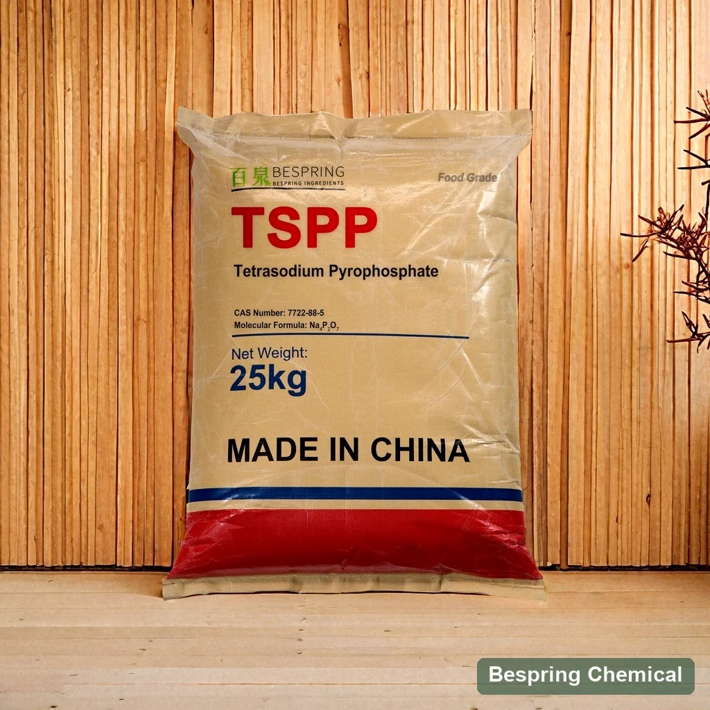
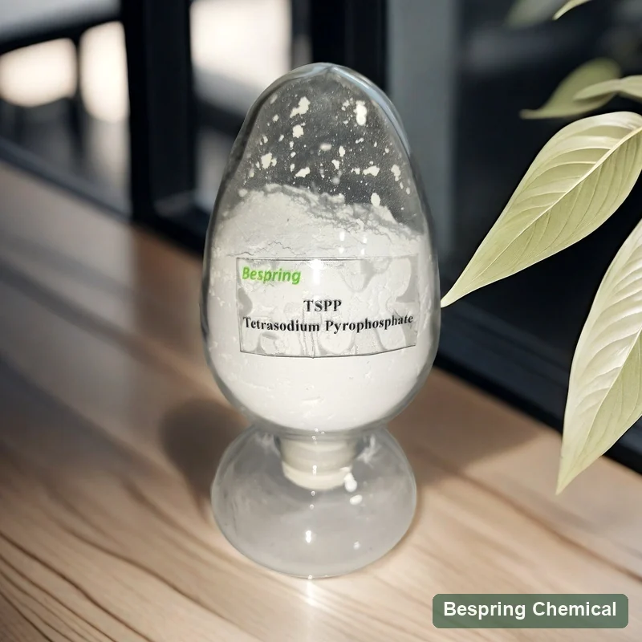
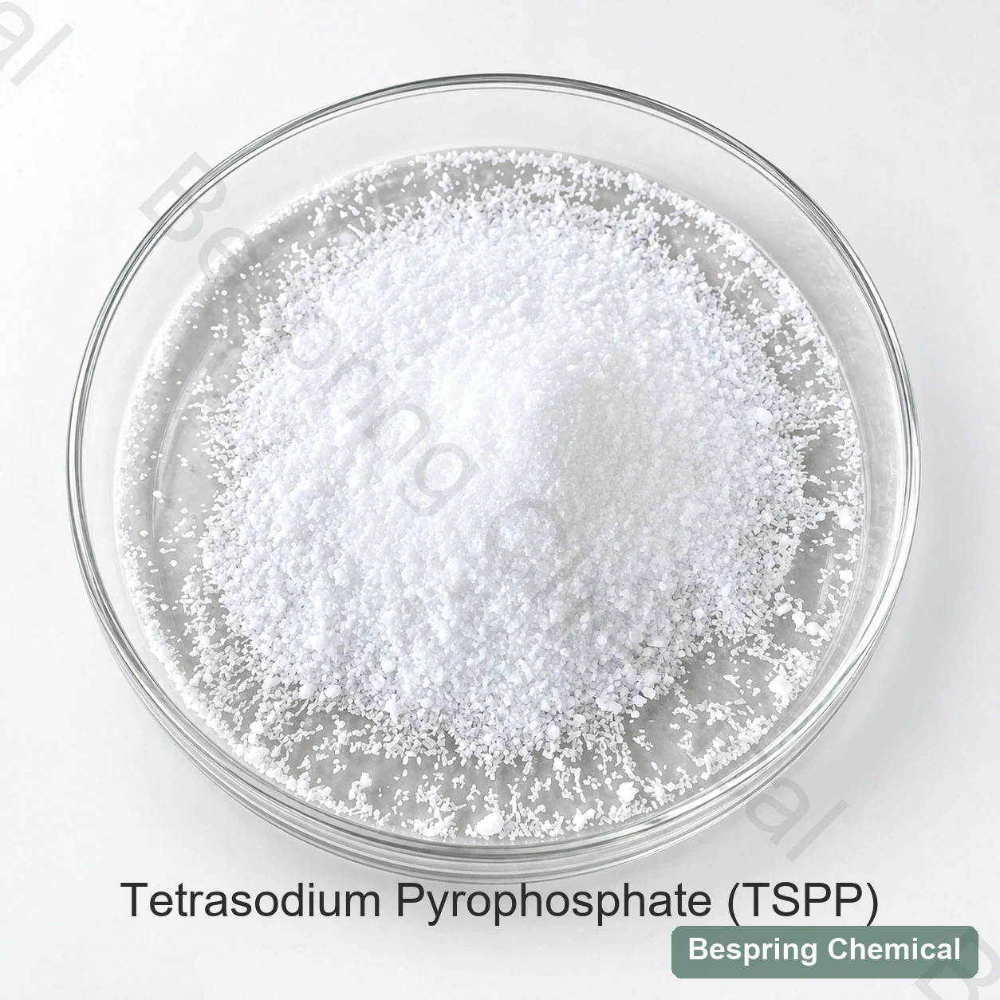
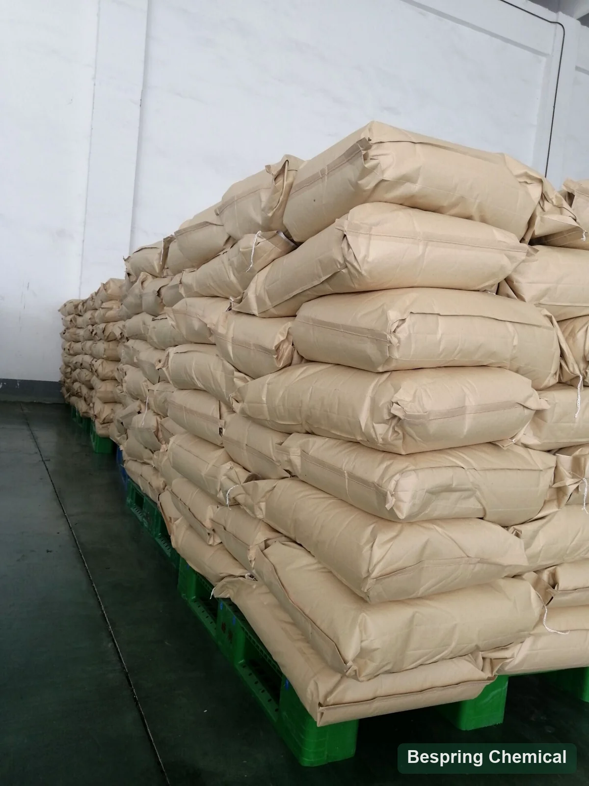

pHとタンパク質チャージ
タンパク質チャージと水分補給は、食品のpHと塩/ミネラル環境に依存します。 生と仕上げpHを、TSPPソリューションpHを完成食品ターゲットとして使用するのではなく、テクスチャ、色、風味と一緒に測定します。
アルカリ結露リン酸塩・E450(iii)/INS 450(iii)
食品等級のテトラソジウムのピロホスフェート(TSPP)はまたテトラソジウムのジリン酸塩と呼ばれる、緩衝代理店、乳化剤およびsequestrantとして使用されるアルカリの食糧リン酸塩です。 Bespringは無水Naを供給します4P2O7 食品規格、フッ化物制限、肉、チーズなどの許可食品システムに提供されるグレードを選択する前に、物理的な形態およびアプリケーションを指定します。

製品イメージ・注文時にグレード・パッケージの確認
*Commercial参照の価値。引用語句の現在の提供された等級の指定、方法、MOQおよび郵送物の言葉を確かめて下さい。
無水アイデンティティ無水Na₄P₂O₇
ソリューションpHリファレンスpH 9.9–10.7 10 g/L* で
Fluoride-limitレビュー商用対JECFA限界
供給の参照*25キロ; 20 MT / 20' FCL
正確な製品識別
テトラソジウムのピロホスフェート(TSPP)、またテトラソジウムのジリン酸塩かナトリウムのピロホスフェートのtetrabasicと呼ばれる、Naです4P2O7、CAS 7722-88-5のINS 450 (iii)/E450 (iii)。 JECFAモノグラフ 乳化剤、緩衝剤および皮下剤機能のリスト。その水溶液はアルカリです;これは酸性ナトリウムの酸のピロホフ酸塩(SAPP)と異なっています。
このページの記述 無水食品等級TSPP、分子量265.94 g/molと。 JECFAはまた脱水Naを記述します4P2O7·10H2O (446.09 g/mol)。 それらの水含有量と点火損失の要件は異なります。それらは等量代替物ではありません。 RFQ、仕様、ラベル、COAを渡る水分補給フォームにマッチします。 化学名だけでは、食品使用のための工業グレードを修飾しません。
機能および公式の条件
TSPPはナトリウムおよびpyrophosphateのイオンに貢献し、pHおよび鉱物蛋白質の相互作用に影響を与えることができます。その参照の解決pHは最終的な食糧pHの予測ではないです。固定収穫か質の利益を仮定するのではなく完全な公式、許された使用およびプロセスを割り当てます。
タンパク質チャージと水分補給は、食品のpHと塩/ミネラル環境に依存します。 生と仕上げpHを、TSPPソリューションpHを完成食品ターゲットとして使用するのではなく、テクスチャ、色、風味と一緒に測定します。
塩、水、温度、タンパク質抽出および結合のための機械的作用でTSPPを評価します。 塩およびマグネシウムのピロリン酸塩の浄化された蛋白質の研究 Actomyosinのメカニズムを支えて下さい;それは商業TSPPの等級のための収穫の保証を確立しません。
ピルオホスフェートは、カルシウムなどの多価なイオンと相互作用することができます。結果は、ミネラル負荷、pH、タンパク質、および成分の競合に依存します。 散布は、すべての食品の明確な解決策を保証するものではありません。
濃度、粒子の形態、水温および付加の順序は溶解およびローカルpHに影響を与えます。実質の塩分かブレンドを検証して下さい。
アプリケーション固有の資格
目的地が意図した使用を許可する場所だけ、これらの食品アプリケーションを検討してください。 測定可能なターゲットを定義し、一致する処理条件の下で制御で提供されたグレードを比較します。
ターゲット: 蛋白質の抽出、結合し、収穫を調理して下さい。
検証: 塩、pH、温度、混合/転倒時間、調理損失、パージ、噛み合い、風味。
ターゲット: 制御された湿気および質。
検証: 種、治療、ピックアップ、解凍剤、ナトリウム、外観および感覚効果。
ターゲット: 乳化塩システムにおけるミネラル/タンパク質バランス。
検証: カルシウム、湿気、pH、熱/shear、溶解、油を差すことおよびセット。 A 管理された処理されたCheddarの調査 一定pHで複雑な濃度応答が見つかったため、TSPPはより優れた溶融を与えることを想定できません。
ターゲット: 許可される緩衝か、または要求事項。
検証: 硬度、明快さ、沈殿物、味、pHの漂流および蛋白質/酸性相互作用。
規制境界: E/INS IDは、すべての食品や投与量を承認しません。 宛先食品カテゴリ、最大レベル、ラベル作成、および総リン酸塩を確認します。
商業参照およびテスト基礎
表は入手可能なBespring TSPP概要の商業限度を保持したものです。バッチ結果や完全な適合評価ではありません。別のTSPP製品資料は、下記の96.5–100.5%範囲ではなく最小含量98.0%を示しています。提案を比較する前に署名済み仕様書で最新のグレード、含量基準および方法を合意してください。
小さな画面では、資格のメモを読むためにテーブルをスワイプします。
スワイプするか、キーボードを使ってすべての列をご覧ください
| フィールド | 商用参照* | 購買要件 |
|---|---|---|
| TSPP アッセイ | 96.5–100.5% | JECFA: 点火基礎の≥95.0%。 商業基礎/方法必要性の確認; 100.5% の分析の上限の限界は 100% の上の物理的純度を妨げません。 |
| P2O5 | 52.5–54.0% | 元素リンやTSPP含量ではなくP₂O₅として表示しています。表示基準と試験方法を確認してください。 |
| pH | 9.9～10.7 10g/L | JECFA：1 in 100溶液で9.9–10.8。商業仕様の10 g/L試験について、調製方法、温度および測定方法を確認してください。 |
| 乾燥の損失 | ≤0.5% | 商業温度および持続期間は述べられません。乾燥の損失は点火の損失と明白です。 |
| 強熱減量 | ≤0.5% | JECFA：105°Cで4 h、その後550°Cで30 minの条件により、無水物≤0.5%、十水和物38–42%です。商業試験条件は記載されていません。 |
| 水溶性物質 | ≤0.20% | JECFA: ≤0.2%。熱湯の不溶性マッター方法およびサンプル ベースを確かめて下さい。 |
| オルソリン酸塩 | パス | 定性的商用結果。テストと受諾エンドポイントを定義します。 “パス” は、測定されたパーセンテージまたは完全な JECFA アイデンティティテストではありません。 |
| アルセンティック | ≤3 mg/kg | JECFA: arsenic として ≤3 mg/kg; 要素固有の方法およびロットの結果を確認して下さい。 |
| リード | ≤4 mg/kg | JECFA:鉛として≤4 mg/kg;要素固有の方法およびロットの結果を確認して下さい。 |
| Pb としての重金属 | ≤10 mg/kg | 「Pb」フィールドとして割り当てます。 別のリードや他の要素のテストを置き換えません。 |
| フッ化物 | ≤50 mg/kg | 参照の限界はフッ化物としてJECFAの≤10のmg/kgを超過します;それは条件を保証することができません。 |
| 外観 | 白い粉/粒状 | 提供された粉末/粒状形状および粒径要件を確認します。写真は保証された分布を定義しません。 |
市販のフッ化物限界は≤50mg/kgで、引用されたJECFAモノグラフは≤10mg/kgを指しています。個々のバッチが下回るかもしれないが、商用限はJECFAの要件を保証することができません。選択した標準、分析方法およびバッチCOAと並ぶ指定を要求して下さい。 「食品等級」のラベルか一致は完全な適合を確立しません。
質量基準では1 ppmは1 mg/kgです。含量、P₂O₅、乾燥減量および強熱減量は別の属性であり、互いに置き換えてはいけません。JECFA定量法は硫酸亜鉛による沈殿と滴定を使用し、強熱物基準で表示します。供給結果がこの方法と基準によるか確認してください。
引用された指定は無水形および脱水器形態を区別し、点火ベースの試金を指定し、同一証明および純度のテストを与えます。
TSPPモノグラフを開くFDA の目録は CAS 7722-88-5 を識別し、乳化剤の塩、pH 制御および分離を含む技術的な効果。 それは供給されたプロダクトの証明ではないです。
FDAのエントリを確認する米国の食糧使用のため、 21 CFR 182.6789 テトラナトリウムピロホスフェートは、良い製造慣行に従って使用する際に安全であると認識します。 該当する食品規格、カテゴリ、分類要件を別々にチェックしてください。 これは、ベスプリンググレードの「FDA承認」ではありません。
ベンチ・ツー・プロダクション承認
状態無水食品等級、宛先、食品カテゴリおよびターゲット標準。
アッセイ、pH、LOI/LOD、不溶性、フッ化物、arsenicおよび鉛のための方法を要求して下さい。
水、塩、温度、順序、集中、機械的作用および熱プロセスを修理して下さい。
記録的な明快さ、ピックアップ、調理ロス、パージ、または解凍剤は、初期の吸収だけではありません。
pH、色、質感、風味、乳液の安定性、総ナトリウム/リン酸塩を測定します。
現在の仕様/ TDS、SDS、代表者COA、実際のバッチCOAを要求します。多くのアイデンティティ、パッキング、ストレージ、および承認されたグレードの通知を変更します。提供された製品および関連サイトに対する要求された証明書またはアレルゲン/ソース宣言を確認します。
出現および貯蔵の参照
入手可能なTSPP製品資料は、クラフト紙外袋とPE内袋による正味25 kg袋を示し、参考積載量を20GP当たりパレットなし20 MT、パレットあり18 MTとしています。概要には最小注文量500 kgが記載されています。見積もりで条件、ラベルおよび実際の積載計画を確認してください。
日光、熱、湿気および有毒な材料から離れた涼しく、乾燥した換気された場所で貯えて下さい。概観は30°Cを超過しない温度を 指定します;別のプロダクト シートは製造から24か月の棚の生命を与えます。開始の後で処理を含む提供された等級のための適当な貯蔵の指示、intact-packの条件および棚の生命を、確認して下さい。



バイヤーの質問
このページは無水Na₄P₂O₇、CAS 7722-88-5、分子量265.94 g/molを扱っています。JECFAは水分と強熱減量要件の異なる十水和物も記載しています。RFQ、仕様書、ラベルおよびCOAに形態を指定し、同重量で同等と考えないでください。
いいえ。商業フッ化物限度は≤50 mg/kgで、引用JECFAの≤10 mg/kgとは異なります。個別バッチが低い場合でも、整合した仕様、確認済み方法およびバッチCOAが必要です。入手可能な商業資料の含量表示も異なるため、供給グレードと表示基準を合意してください。
TSPPは、タンパク質とミネラルシステム試験のためのアルカリピロホスフェート機能を提供します。塩、pH、原材料組成物、混合またはタムリン化、加熱および貯蔵を評価します。 調理損失を測定し、肉にパージし、溶かし、油を差してチーズの質感を調節します。 固定改善は保証されません。
いいえ。STPPは、ナトリウムの代わりに異なるリン酸チェーン、TKPPはカリウムを供給し、SAPPはリン酸性残留リン酸塩です。 許可された使用、組成物、溶解、pH、プロセスの結果を等しい重量を交換するのではなく比較します。
いいえ。商業上のpH参考値は10 g/Lで9.9–10.7です。食品中の挙動は濃度、酸、たんぱく質、ミネラルおよび他の原料に依存します。加工・保管中の配合全体を測定してください。
無水食品等級、宛先および食品規格、試金ベース、フッ化物および他の重要な限界、粉/粒状好み、適用およびプロセス、量、包装および配達条件を提供して下さい。リストはTDS、SDS、COAおよび宣言を要求し、実際の提供の証明書の規模そして棚の生命を確かめます。
2026-10-04 · テクニカルリファレンス: FAO/WHO JECFA、米国FDA/eCFRおよび引用されたタンパク質/加工チーズ研究。
関連する資格リソース
プラン抽出、ピックアップ、調理ロス、パージ、感覚試験。
治療、取込み、解凍、外観を評価します。
塩は、カルシウム、カゼイン、熱、せん断で選ぶことができます。
バランスの容解性、アルカリ性およびシステム性能。
応用主導の調達
見積書と提供された書類を要求します。 食品規格、プロセス、および重要な制限をシェアすることで、提案は仕様に対して検討することができます。
あなたの等級および宛先市場を私達に知らせて下さい従って私達はあなたの順序のためにどの文書が利用できるか確認してもいいです。
外部参照は、バッチ証明書または Bespring 製品仕様ではありません。